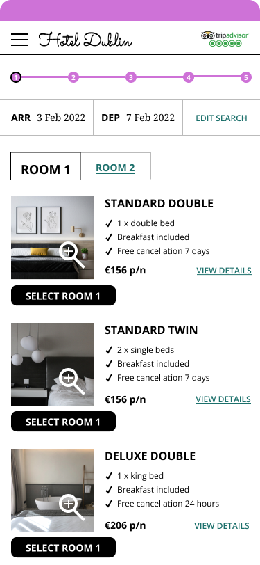
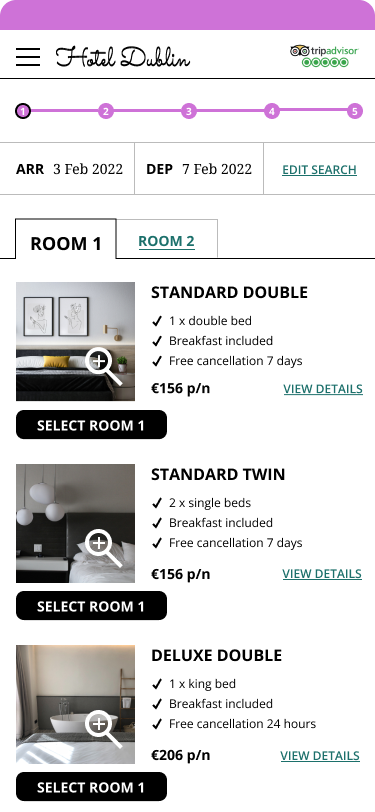

StayUX Hotel Booking Design
Product Design Case StudyI created a mobile room booking tool for an Irish hotel to address their challenges competing with hotel aggregators for direct bookings.
Business Goals
- Hotels want to encourage direct bookings.
- Reduce aggregator bookings from 48% of current bookings.
- Create a mobile-friendly booking tool.
User Impact Goals
- Mobile-friendly booking tool that allows on-the-go planning for modern travellers.
- A booking tool that facilitates comparison shopping across dates and room types.
 

1. Research
1.1 Survey
Designed understand user habits, frustrations and booking contexts. 123 survey responses.
90% book hotels on a mobile device
Users struggle to compare prices for various dates
Users hate finding out availability issues late in the process
Pop-ups and membership offers are just seen as intrusive
1.2 Competitor Benchmarking
Identify usability conventions and pain points in booking process across 3 hotels and 1 aggregator.
COMPETITOR BENCHMARKING
Search Results Page
- Best rate guarantee to incentivise direct booking
- Unnecessary info comes first - mobile key, currency calculator, service request
- Three tabs for “standard”, “prepay” and “deals” on separate tabs, hard to compare the same room
- BONVOY popup at bottom - but no explanation of what it is
- Search result layout clearly shows gallery and important room details
- Unclear what member rate is or how to get it
Key Findings
- Pop-ups interfered with functionality
- Booking multiple rooms or multiple occupancy rooms was often not possible online
- No hotel websites offered correct keyboards for data entry
- Forms frequently requested duplicate information
1.3 Usability Testing
Learn user context and observe user flows - 3 user on 2 hotel sites.
Key Findings
- Difficult to see hotel location to determine suitability
- Date pickers were consistently frustrating
- Room details were often vague or visually misleading
- Users wanted clear information on deals and cancellation policies
- Membership popups were unclear on benefits or if they were compulsory
- User liked ability to book “add-ons” at the same time as booking
2. Analysis
2.1 Affinity Diagram
Review the research completed and create structure around the qualitative data. Analyse the research data to find overlaps, gaps and unexpected insights.
Key Findings
Different pain points were discovered using the three research techniques.
- Survey: Pain point with unclear date availability and price transparency
- Competitive Benchmarking: Poor keyboard design, only group sizes of 1-2 can book online, confusing payment process
- Usability Testing: Poor datepicker experience, lack of detail on room amenities, misleading images, unclear booking policies.
2.2 Customer Journey Map
Translate the research data into a structured format to inform the design of the booking process. This was achieved by mapping each stage of the booking process under the headings: User goals, behaviours, context, pain points, mental model and positives.
Key Findings
- Low point occurs when users browse the search results - confusion over room types, amenities and policies
- Customers have a negative experience at the payment stage - form fatigue and data repetition
These two became my primary focus areas for UX improvement.
3. Concept
The concept covered the main hotel booking flow from homepage through to payment.
3.1 Flow Diagram
I mapped out each screen and all possible states from homepage to confirmation.
3.2 Interaction Design
Sketched and iterated low-fidelity screens for each major step building on the flow diagram and customer journey map.
- Ensure easy goal completion for users
- Address pain points particularly in tricky search results screens
- Ensure positive experiences were retained
- User’s context, mental model and typical behaviour incorporated
Annotation helped prepare for feedback rounds.
4. Prototype and Testing
4.1 Figma Prototype
Built a interactive prototype for the full mobile booking flow:
Homepage → Availability search → Search results → Room selection → Payment → Booking confirmation
The prototype was interactive for a specific booking task that could then be tested with users. The prototype was medium fidelity with representative text and images used.
4.2 Usability Testing Round 2
Next I ran task-based test using the prototype.
Task - Book a two-night stay in Dublin next month on specific dates.
Key Findings
- Users appreciated the reduced steps and mobile-focused layout
- Users missed the information icon for room details during the task → I replaced this information icon with a more visible link and also added upfront room highlights
- No major failures in completing the task post-revision
4.3 Prototype Annotation
As a final step I annotated the prototype to allow it to be handed over to developers.
Outcomes and Reflection
While this was a concept project, the process and results were rooted in practical UX and product principles.
Goals
- Reduce confusion on the search results page > clear amenities, occupancy and cancellation policy
- Reduce frustration on payment step > No duplicate information requested from customer
- Allow multiple occupancy bookings > Group bookings available
- Reveal pricing and available at earliest opportunity > Revealed early at datepicker stage
Results
- 50% improvement in task completion time
- No backtracking in process during usability tests
Next Steps
- Validate the pricing logic and edge cases with real hotel inventory systems
- Integrate real-time availability APIs for true dynamic search